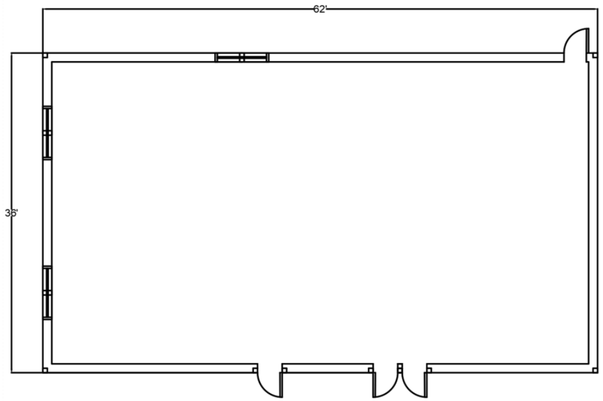
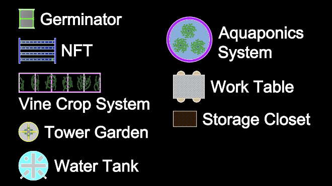
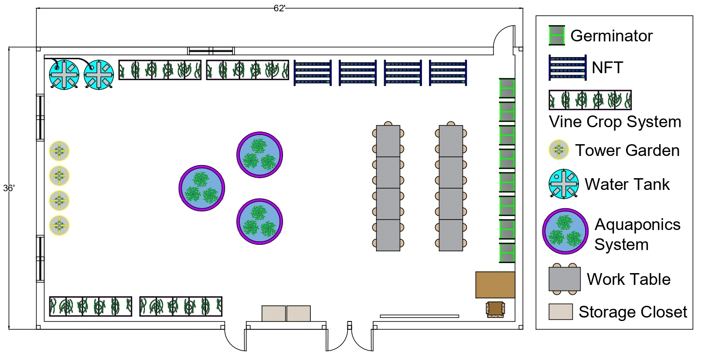

Project Overview
Students were tasked with designing an environmental science lab room for educational use. The goal was to provide students with a real-world situation where they could practice their skills in AutoCAD, as well as meet criteria required by the client.
This project was a part of Bayside High School's Design and Drawing Production course with the goal of practicing AutoCAD skills, along with learning about environmental science and designing a lab room for the school.
Design Criteria
The environmental science lab room will be a 60 ft by 34 ft (by interior walls) room, and used by 7 to 8 Living Environment classes. The space must include the following:
- 8 Germinators (24" × 30")
- 4 NFTs (39" × 57")
- 4 Vine crop systems (30" × 126")
- 4 Tower gardens (30" diameter)
- 2-3 Rainwater tanks (45" diameter)
- 2-3 Aquaponics system (70" diameter)
- 8 Work tables with four 12" diameter stools (48" × 36")
- 2 Storage closets (24" × 30")
Additionally, there must be a 120" by 4" smart board in the lab room, as well as a 60" by 40" desk for the teacher that should be visible from the entire room. All greenhouse items should be offset from the wall by 8"-12", and all items should have at least 24" of clearance, except for the tower gardens, which should have at least 36" of clearance. There must be 36" of clearance for walkways, and no doorways should be blocked. Water tanks must have pipe access to the outside to collect water.
All equipment should be visually detailed using reference images to differentiate the different equipment. Additionally, if time persists, piping and electrical connections to the various systems can also be added.

Layout and size constraint of lab room
Design Process
First, I created the designs for each equipment. The art design was unnecessarily complicated and time consuming, as I had added details that were too small to be visible. It proved to be an even bigger challenge, as some equipment had so many details that it was taking up too much computer memory, and I had to freeze parts to avoid my computer crashing.

Final design of the equipment types
Then, I started on the design by placing equipment on the sides of the room and working my way around the room. I started with the water tanks on the top left side, where it has easy access to the outside. To avoid blocking the windows in the room, I placed the four tower gardens on the left side, and two vine crop systems on the bottom side and two on the top side, next to the water tanks. I placed the NFTs next to the vine crop systems, and the germinators on the right side, making sure not to block the doorway. I placed two rows consisting of four lab tables in the middle on the right side, and the smart board and teacher's desk towards the bottom for all students to be able to see from the tables. Finally, I placed the aquaponics system in the middle of the room and the storage closets between the two doorways into the room from the hallway.

Final layout of the lab room
Conclusion
Overall, the project was somewhat successful, with a layout that meets all criteria by the client. However, it could have been better if I simplified the design and focused more on the layout itself, as well as work on the electrical wiring and pipes system. If I could work on this project again, I would probably make the design minimalistic and focus more on the layout and other visuals such as flooring.